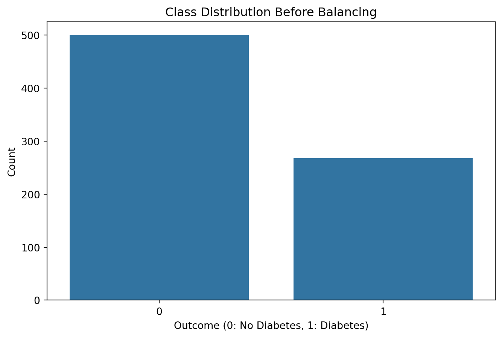
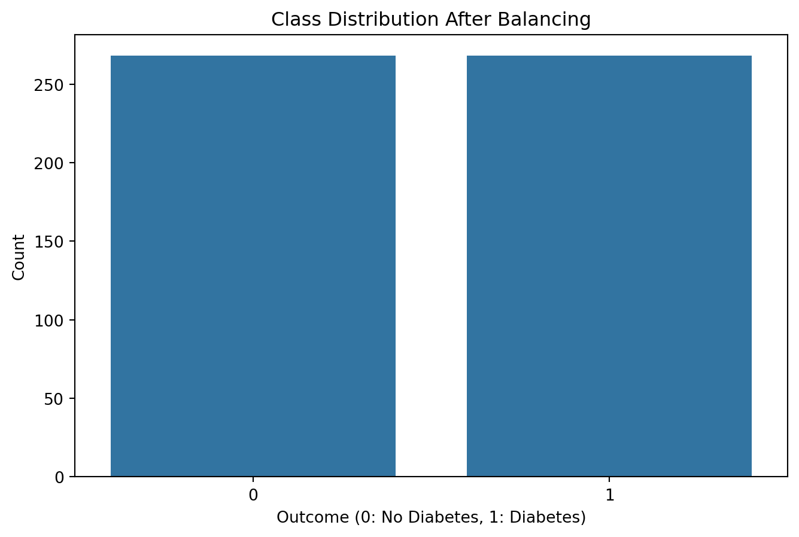
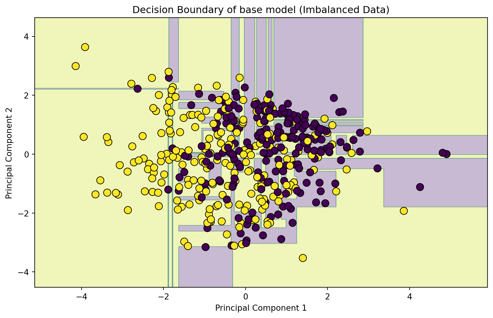
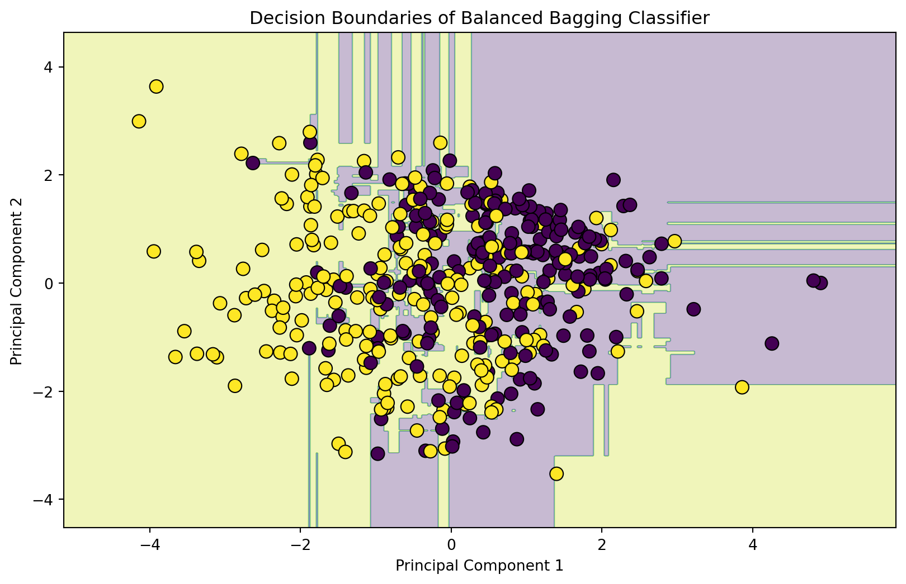

# Import the libraries
import pandas as pd
import numpy as np
import matplotlib.pyplot as plt
import seaborn as sns
from sklearn.model_selection import train_test_split
from sklearn.preprocessing import StandardScaler
from sklearn.decomposition import PCA
from imblearn.ensemble import BalancedBaggingClassifier
from sklearn.tree import DecisionTreeClassifier
from sklearn.metrics import accuracy_score, classification_report
# Define a function to plot decision boundaries
def plot_decision_boundary(model, X, y, title):
h = .02 # step size in the mesh
x_min, x_max = X.iloc[:, 0].min() - 1, X.iloc[:, 0].max() + 1
y_min, y_max = X.iloc[:, 1].min() - 1, X.iloc[:, 1].max() + 1
xx, yy = np.meshgrid(np.arange(x_min, x_max, h), np.arange(y_min, y_max, h))
Z = model.predict(np.c_[xx.ravel(), yy.ravel()])
Z = Z.reshape(xx.shape)
plt.contourf(xx, yy, Z, alpha=0.3)
plt.scatter(X.iloc[:, 0], X.iloc[:, 1], c=y, edgecolors='k', marker='o', s=80, linewidth=0.8)
plt.title(title)
plt.xlabel(X.columns[0])
plt.ylabel(X.columns[1])
plt.show()Classification: Using Balanced Bagging Classifier
Introduction:
In the realm of machine learning, dealing with class imbalance is a common challenge that can significantly impact model performance. In this blog, we delve into the application of balanced bagging classifiers using the Pima Indians Diabetes dataset. Additionally, we harness the power of Principal Component Analysis (PCA) to gain visual insights into decision boundaries within a reduced-dimensional space.
Defining the Decision Boundary Method:
We begin by importing essential libraries and defining a function to plot the decision boundary so as to properly visualize how target variable is classified.
Class Distribution Before Balancing:
For this blog, we will use the Pima Indians Diabetes (Pima) dataset which is freely available online. This dataset contains crucial health parameters, like BloodPressure, SkinThickness, etc. Each record in this dataset describes the medical details of a female, and the prediction is the onset of diabetes within the next five years. A visual inspection of the class distribution before any balancing techniques reveals the initial state of the data.
# Load the Pima dataset
url = 'https://raw.githubusercontent.com/jbrownlee/Datasets/master/pima-indians-diabetes.csv'
column_names = ['Pregnancies', 'Glucose', 'BloodPressure', 'SkinThickness', 'Insulin', 'BMI', 'DiabetesPedigreeFunction', 'Age', 'Outcome']
data = pd.read_csv(url, names=column_names)
# Plot class distribution before balancing
plt.figure(figsize=(8, 5))
sns.countplot(x='Outcome', data=data)
plt.title('Class Distribution Before Balancing')
plt.xlabel('Outcome (0: No Diabetes, 1: Diabetes)')
plt.ylabel('Count')
plt.show()
Using Random Under-Sampling:
To address class imbalance, we employ the Random Under-Sampling technique, strategically removing instances from the majority class. The resulting balanced dataset is visualized for a clearer understanding.
# Apply balanced sampling techniques using RandomUnderSampler
from imblearn.under_sampling import RandomUnderSampler
# Split the data into features (X) and target variable (y)
X = data.drop('Outcome', axis=1)
y = data['Outcome']
# Use RandomUnderSampler for under-sampling
rus = RandomUnderSampler(random_state=42)
X_resampled, y_resampled = rus.fit_resample(X, y)
# Create a DataFrame with the balanced data
balanced_data = pd.DataFrame(X_resampled, columns=column_names[:-1])
balanced_data['Outcome'] = y_resampled
# Visualize the balanced class distribution
plt.figure(figsize=(8, 5))
sns.countplot(x='Outcome', data=balanced_data)
plt.title('Class Distribution After Balancing')
plt.xlabel('Outcome (0: No Diabetes, 1: Diabetes)')
plt.ylabel('Count')
plt.show()
Model Training with PCA:
This balanced data is now utilized for model training. We split the dataset, standardize features, and integrate PCA to reduce dimensionality, capturing essential patterns for our models.
#Assign the features
feature_names = column_names[:-1]
# Split the data into features (X) and target variable (y)
X = balanced_data.drop('Outcome', axis=1)
y = balanced_data['Outcome']
# Split the data into training and testing sets
X_train, X_test, y_train, y_test = train_test_split(X, y, test_size=0.2, random_state=42)
# Standardize the features
scaler = StandardScaler()
X_train_scaled = scaler.fit_transform(X_train)
X_test_scaled = scaler.transform(X_test)
# Apply PCA to reduce dimensionality
pca = PCA(n_components=2)
X_train_pca = pca.fit_transform(X_train_scaled)
X_test_pca = pca.transform(X_test_scaled)Decision Boundaries of the Base Model and Balanced Bagging Classifier:
Finally, a base model (Decision Tree) and an ensemble model (the Balanced Bagging Classifier) are trained. Their decision boundaries are then plotted so as to visualize the difference in classification of the target variable after balancing the classes. We have plotted the decision boundaries of both the base model (trained on the imbalanced dataset) and the Balanced Bagging Classifier within the reduced-dimensional space obtained through PCA.
# Define and train a base model (e.g., Decision Tree)
base_model = DecisionTreeClassifier(random_state=42)
base_model.fit(X_train_pca, y_train)
# Initialize and train a Balanced Bagging Classifier
balanced_bagging_model = BalancedBaggingClassifier(base_model, random_state=42)
balanced_bagging_model.fit(X_train_pca, y_train)
# Visualize decision boundaries of the base model
plt.figure(figsize=(10, 6))
plot_decision_boundary(base_model, pd.DataFrame(X_train_pca, columns=['Principal Component 1', 'Principal Component 2']), y_train, 'Decision Boundary of base model (Imbalanced Data)')
# Visualize decision boundaries of the balanced bagging classifier
plt.figure(figsize=(10, 6))
plot_decision_boundary(balanced_bagging_model, pd.DataFrame(X_train_pca, columns=['Principal Component 1', 'Principal Component 2']), y_train, 'Decision Boundaries of Balanced Bagging Classifier')

from sklearn.metrics import confusion_matrix, accuracy_score, precision_score, recall_score, f1_score
# Function to evaluate a model and print metrics
def evaluate_model(model, X, y):
y_pred = model.predict(X)
accuracy = accuracy_score(y, y_pred)
precision = precision_score(y, y_pred)
recall = recall_score(y, y_pred)
f1 = f1_score(y, y_pred)
print(f"Accuracy: {accuracy:.4f}")
print(f"Precision: {precision:.4f}")
print(f"Recall: {recall:.4f}")
print(f"F1 Score: {f1:.4f}")
# Confusion matrix
cm = confusion_matrix(y, y_pred)
print("\nConfusion Matrix:")
print(cm)
# Evaluate the base model
print("Base Model Evaluation:")
evaluate_model(base_model, X_test_pca, y_test)
# Evaluate the improved Balanced Bagging Classifier
print("\nImproved Balanced Bagging Classifier Evaluation:")
evaluate_model(balanced_bagging_model, X_test_pca, y_test)Base Model Evaluation:
Accuracy: 0.5926
Precision: 0.5424
Recall: 0.6531
F1 Score: 0.5926
Confusion Matrix:
[[32 27]
[17 32]]
Improved Balanced Bagging Classifier Evaluation:
Accuracy: 0.6667
Precision: 0.6226
Recall: 0.6735
F1 Score: 0.6471
Confusion Matrix:
[[39 20]
[16 33]]Conclusion:
In this blog, we’ve navigated through the intricacies of handling class imbalance using balanced bagging classifiers and illuminating decision boundaries through PCA. This approach not only improves model robustness but also enhances interpretability, crucial for making informed decisions.
Source:
The dataset is prepared by Jason Brownlee and can be found here- Pima Indians Diabetes dataset.
The Image is taken from- https://datagalore.substack.com/p/class-imbalance-problem